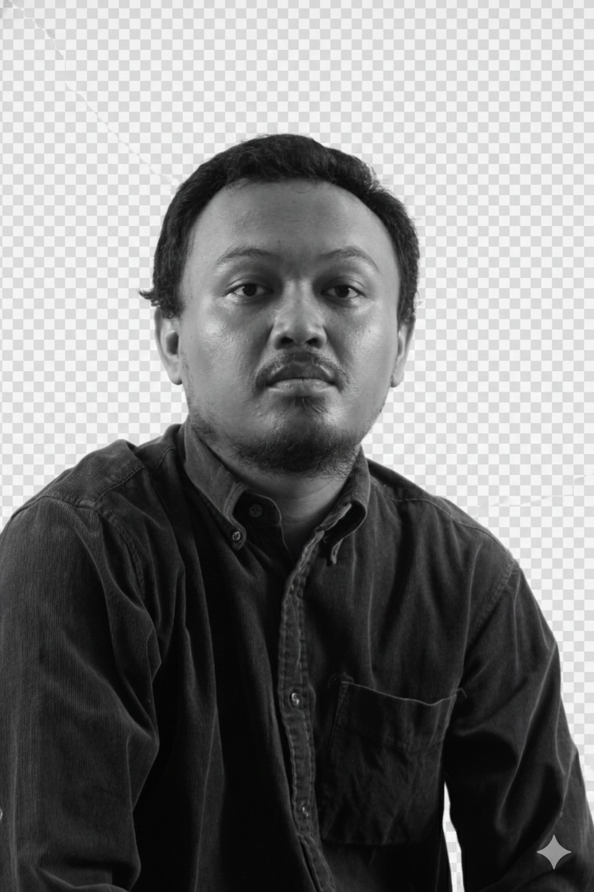

IT Infrastructure & Data Center Operations
Reliability | Connectivity | Precision Always seeking new opportunities

Spesialis Infrastruktur IT dengan pengalaman lebih dari 12 tahun dalam mengelola operasional Data Center kritis. Ahli dalam menjaga uptime sistem melalui manajemen kelistrikan (UPS/Genset), virtualisasi VMware, dan troubleshooting jaringan tingkat lanjut. Berpengalaman dalam menjembatani kebutuhan teknis dengan stabilitas bisnis melalui analisis log transaksi dan pemeliharaan infrastruktur yang presisi.